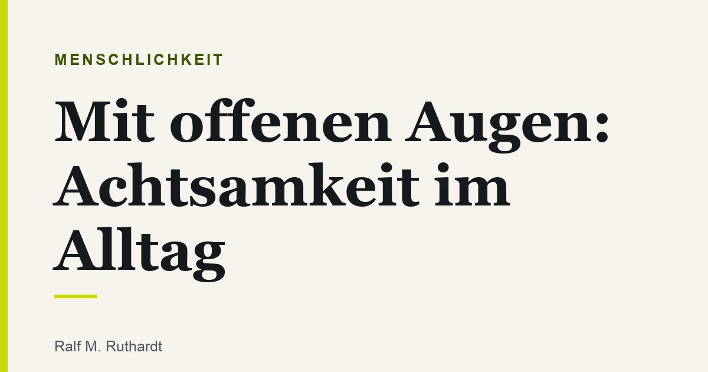
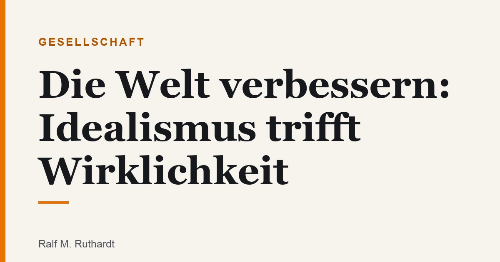
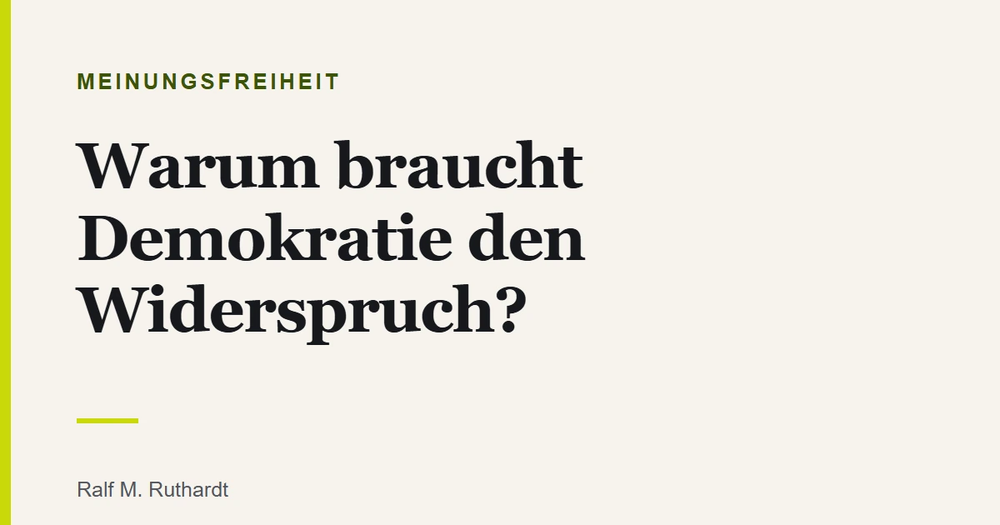
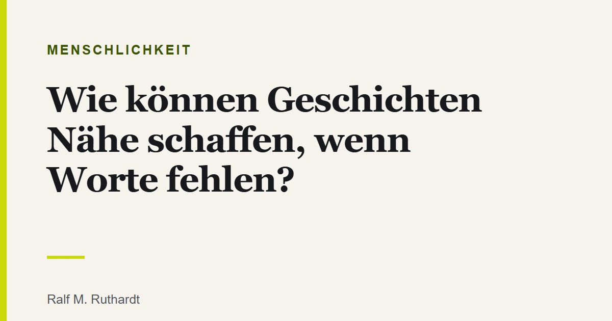

Mit offenen Augen: Achtsamkeit im Alltag
Achtsamkeit braucht kein Kissen und keine App. Sie beginnt damit, mit offenen Augen durch den Tag zu gehen.
Weiterlesen →Magazin
Beiträge über Meinungsfreiheit, Polarisierung, Menschlichkeit und Literatur. Inspiriert vom Magazin mitmenschenreden.

Achtsamkeit braucht kein Kissen und keine App. Sie beginnt damit, mit offenen Augen durch den Tag zu gehen.
Weiterlesen →
Die Welt verbessern zu wollen, ist kein Fehler. Schwierig wird es erst, wo der Idealismus die Wirklichkeit nicht mehr sehen will.
Weiterlesen →
Es war nie so leicht, etwas zu sagen, und selten so schwer, etwas zu meinen. Über ein Schweigen aus Vorsicht.
Weiterlesen →
Wir streiten nicht zu viel. Wir streiten zu selten miteinander und zu oft übereinander. Warum Perspektivwechsel der Schlüssel ist.
Weiterlesen →
Wenn die Erinnerung verblasst, bleibt oft eines: der Klang vertrauter Worte. Warum Vorlesen eine Brücke baut.
Weiterlesen →
Ein Buch, das niemandem wehtut, hat oft auch niemandem etwas zu sagen. Über die leise Selbstzensur, die sich Vorsicht nennt.
Weiterlesen →